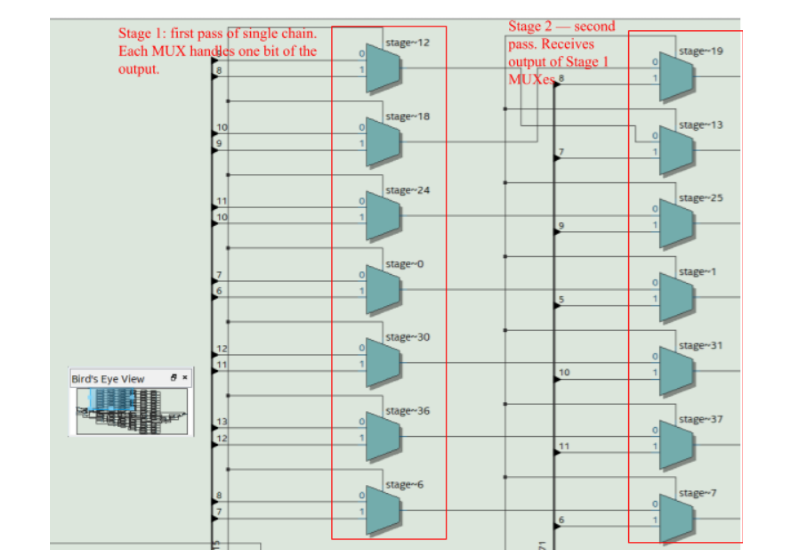
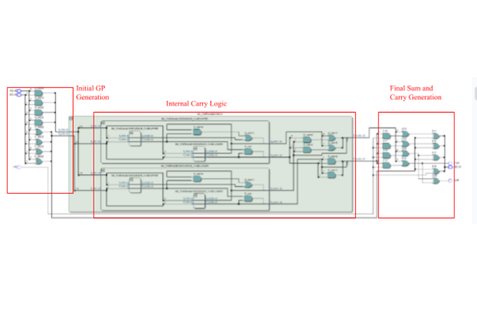
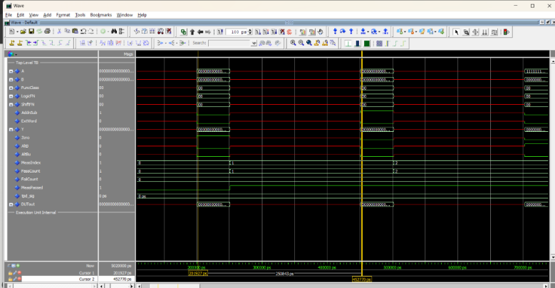

The RISC-V Execution Unit (Exu) was the final 3-man group project of ENSC 350, Digital Systems Design. It is a recreation of an execution unit found in a RISC-V processor, capable of being implimented in a real processor with full instruction coverage. A comprehensive report detailing the timing and cost results of testing multiple design candidates (consisting of different combinations of adders and shifters) was written in conjuction. The report found that from the tested candidates, the Brent-Kung + 2-channel mux was the best for the Cyclone IV FPGA, while the Brent-Kunt + 8-channel mux was best for the Arria II FPGA.

Sample 8-channel shifter

Sample Brent-Kung Adder

Sample Waveform (Functionality)
The exu was designed to be tested with a variety of different input sizes, of varying powers of 2. There were 2 options to accomodate this, manually change the .vhd files for each input size, or make the inherent structure adaptable to different input sizes, with the latter being choosen.
This would mean that testing would be massively expedited, however this complicated the development process. The recursive and iterative implimentations of the adders made this process relativly easy. The shifters required a logarithmic algorithm, where the correct bits could be mapped correctly to the muxes.
Debugging proved to be a particularly challenging task, due to the depth and complexity of the systems. As the primary debugger, this project tested my debugging abilities in this sense, as I utilized both Quartus and ModelSim to determine bugs. The aformentioned shifter proved problematic, due the adaptive nature.
This project was the culmination of my (at the time) computer knowledge and experience. I gained a lot of information about practical computer design, as well as testing and debugging said designs. In particular, I gained a lot of expeience with testing. For example, when performing the functionality tests, I learned that you should inspect the tests themselves for correctness, as my expected results were incorrect. Thus this lead to false negatives.
I hate coal mining, why do i need a Divan's drill. Hell, they should nerf farming some more and mega buff mining (Not biased)